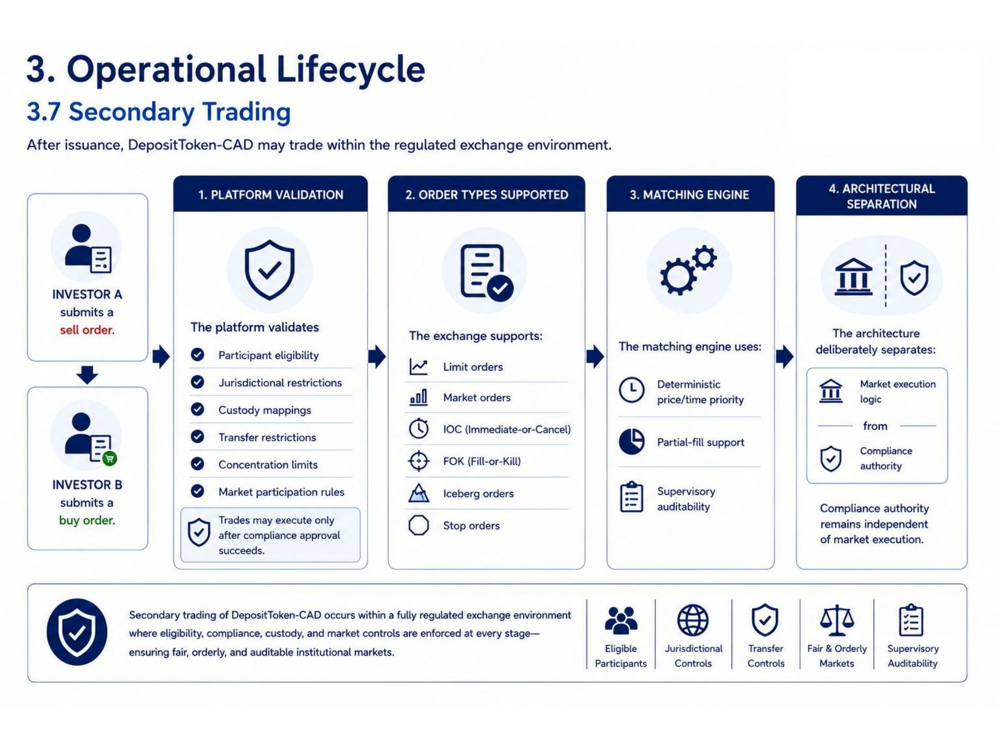
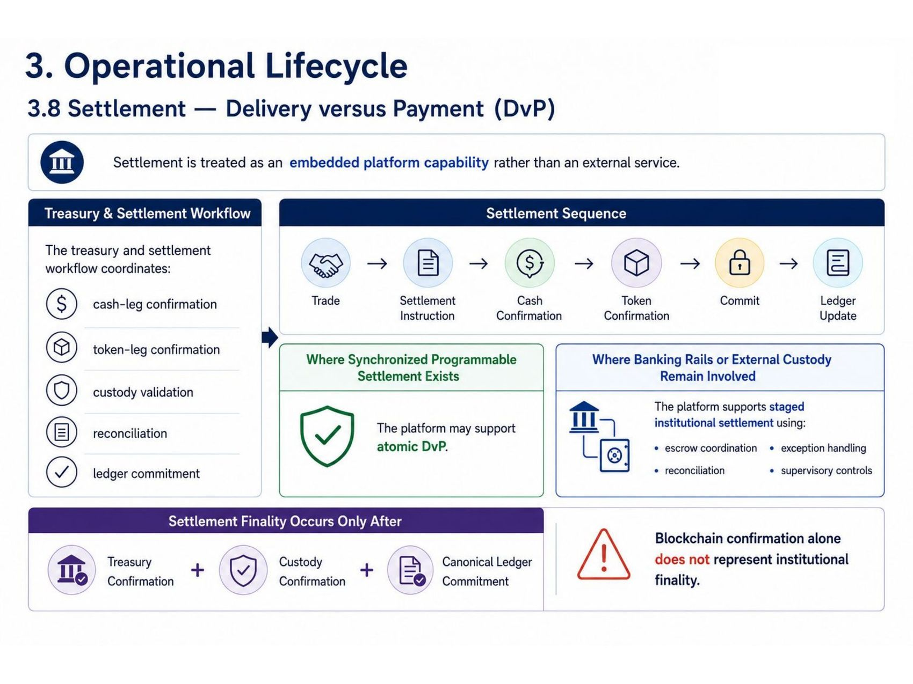
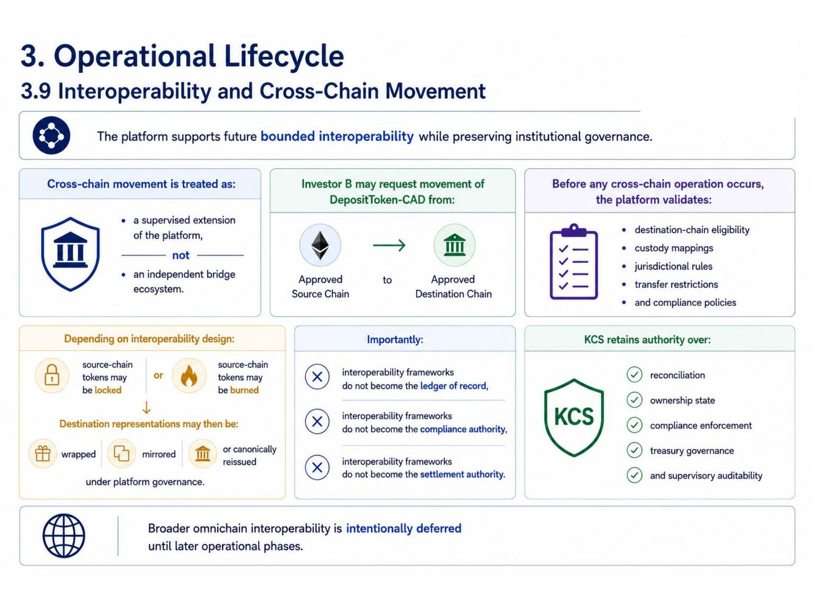
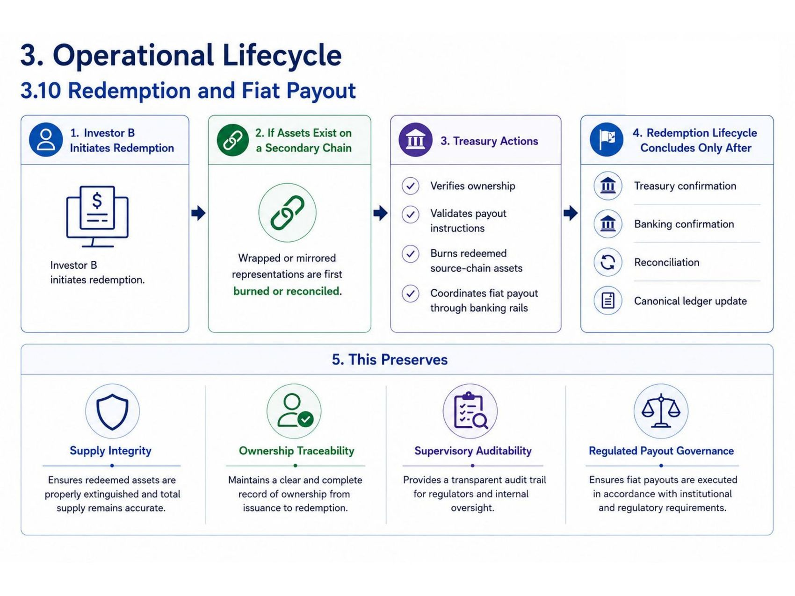
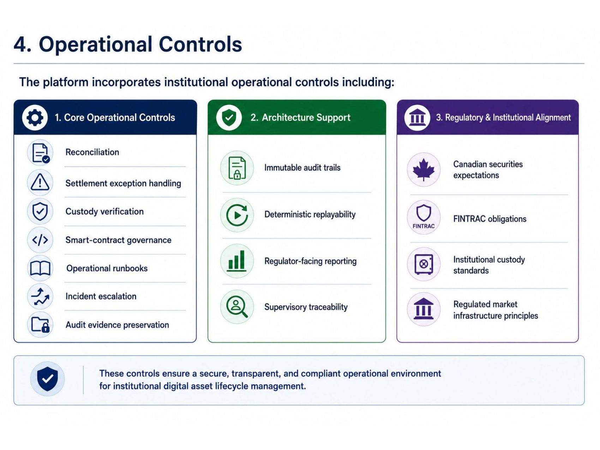
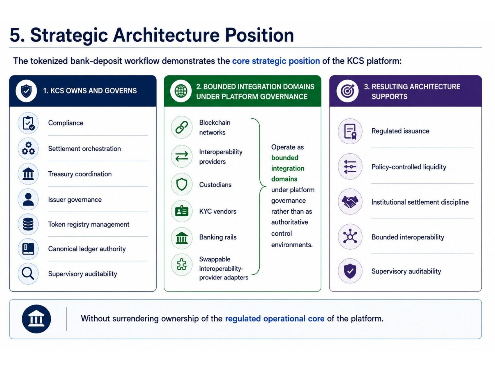
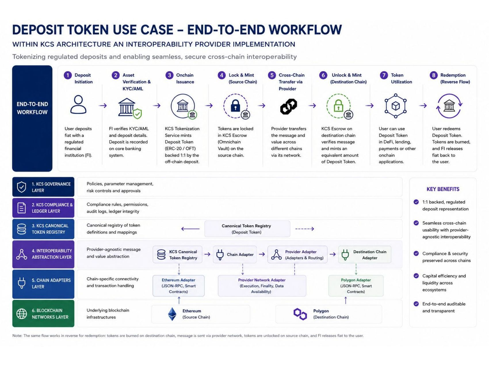
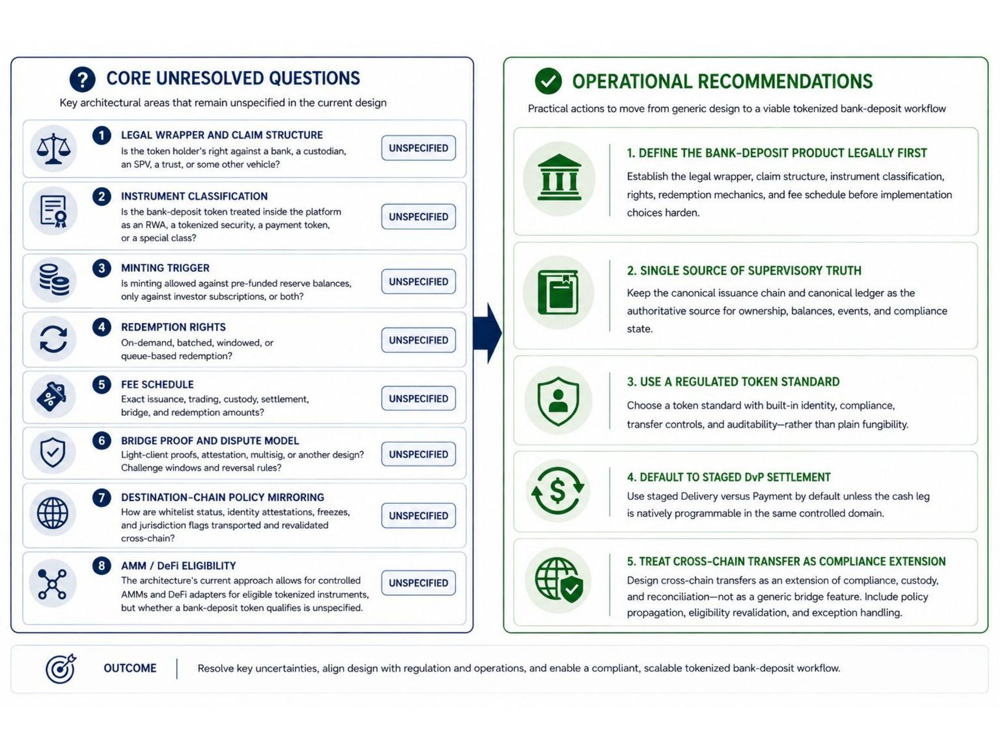
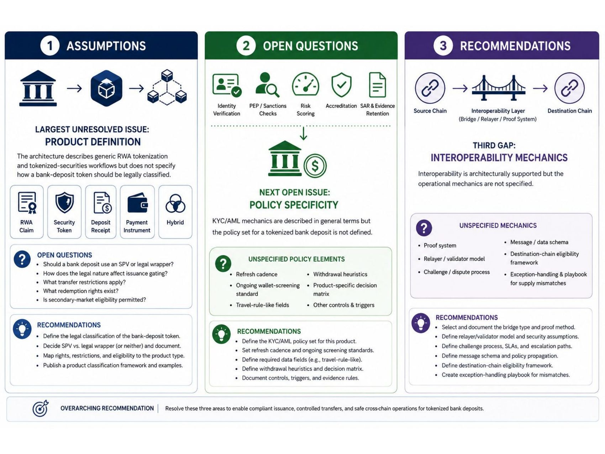

The architecture working deck behind document 03.2, slide by slide: secondary trading, DvP settlement, cross-chain movement, redemption, operational controls, the KCS architecture position, the end-to-end workflow map, and the open design questions. The written analysis of every page is in document 03.2.









Prepared for approved data room members. KCS architecture working deck, June 2026. View only; not for distribution.